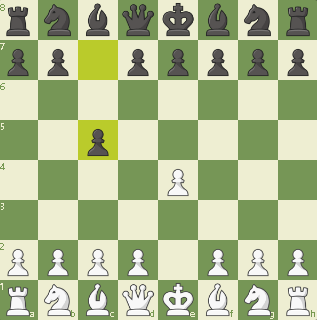
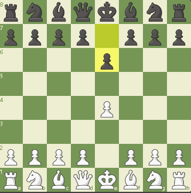
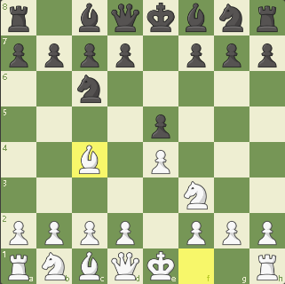
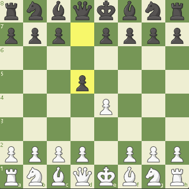

Obrona Sycylijska

Debiut ten jest najpopularniejszą i dającą najlepsze efekty odpowiedzią na pierwszy ruch białych 1. e4. Statystycznie skuteczniejszym otwarciem dla białych jest 1. d4, gdyż obrona (sycylijska) przed 1. e4 ma wysoki wskaźnik skuteczności. W czasopiśmie „New in Chess” (w roczniku wydanym w roku 2000) podano, że w grach z jego bazy danych białe wygrały 56,1% partii (z 296 200), zaczynając od 1. d4, a przy rozpoczęciu od 1. e4 było to 54,1% partii (z 349 855), głównie dzięki obronie sycylijskiej (52,3% wygranych przez białe ze 145 996 rozgrywek).
Obrona Francuska

Podstawowa idea polega na zabezpieczeniu słabego pola f7 i przygotowaniu posunięcia d7-d5, przy jednoczesnym zapewnieniu rozwoju skrzydłu królewskiemu. Białe praktycznie nie są w stanie skutecznie zapobiec temu planowi, dlatego ich strategia polega na wykorzystaniu trudności z rozwinięciem hetmańskiego gońca czarnych ("francuski goniec") oraz zacieśnieniu pozycji czarnych ruchem e4-e5 i rozwinięciu aktywnych działań na skrzydle królewskim (włącznie z klasyczną ofiarą gońca). Ze swej strony czarne mają jasną kontrgrę c7-c5 a przy e4-e5 białych, także f7-f6, a ich szanse są większe na skrzydle hetmańskim.
Partia Włoska

Partia włoska – otwarcie szachowe, które charakteryzuje się posunięciami: 1.e4 e5 2.Sf3 Sc6 3.Gc4 Gc5 Partia włoska, nazywana również giuoco piano, co po włosku oznacza spokojną grę, jest debiutem otwartym. W klasyfikacji encyklopedii otwarć szachowych jest oznaczona kodami ECO C50-C54. Pierwsze opisy tego debiutu były zawarte w manuskrypcie z Getyngi (ok. 1490 roku) i książce Luisa Luceny z 1497 roku. Do końca XIX wieku była jednym z najpopularniejszych sposobów rozgrywania początkowej fazy partii. Stosowali ją powszechnie dziewiętnastowieczni mistrzowie, między innymi Louis de la Bourdonnais, Paul Morphy i Adolf Anderssen. W XX wieku jej popularność znacznie spadła, niemniej do dzisiaj sporadycznie pojawia się w turniejach arcymistrzów. Chętnie grywali ją Aleksander Alechin, Max Euwe i Paul Keres, jednak raczej przeciw mniej utytułowanym przeciwnikom.
Obrona Skandynawska

Obrona skandynawska – otwarcie szachowe charakteryzujące się posunięciami: 1.e4 d5 Obronę skandynawską zastosowano w najstarszej znanej partii szachów europejskich, rozegranej około 1475 r. w Walencji. W 1497 r. jej opis znalazł się w książce Luisa Luceny. W XIX wieku analizował ją Carl Jänisch. Dużą popularność zyskała na przełomie XIX i XX wieku. Swoją nazwę zawdzięcza pracom szwedzkich szachistów Ludwiga i Gustafa Collijnów. W 1918 roku monografię otwarcia opublikował Jacques Mieses, który często stosował ten debiut w turniejach i znacząco przyczynił się do rozwoju jego teorii.